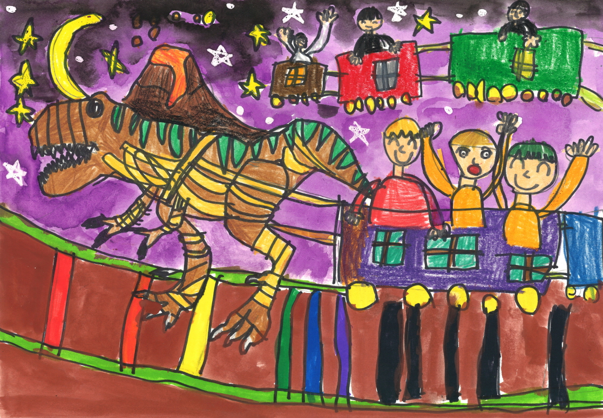
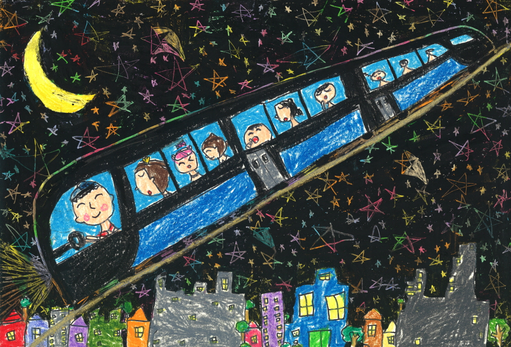
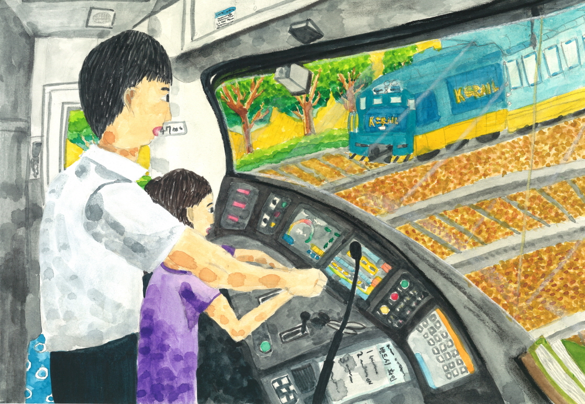
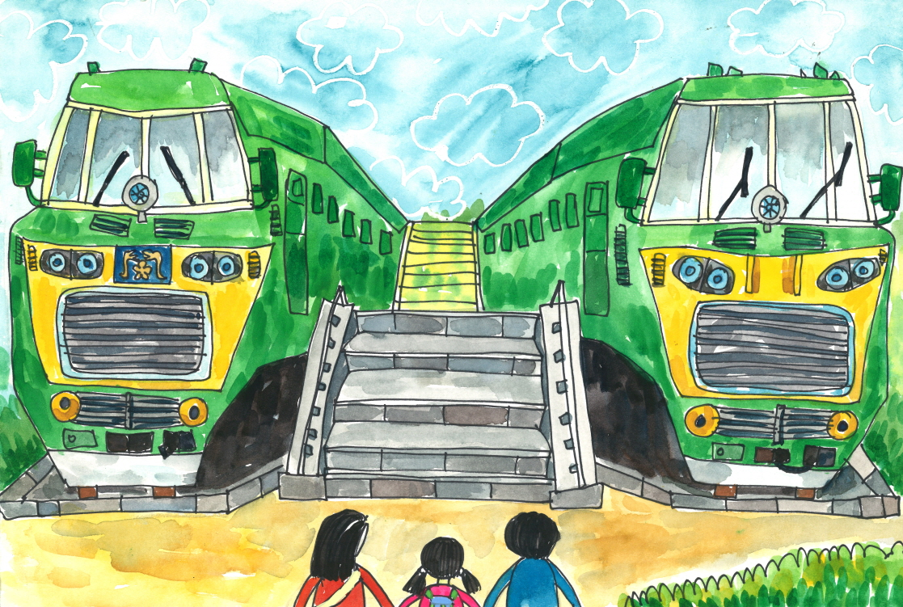
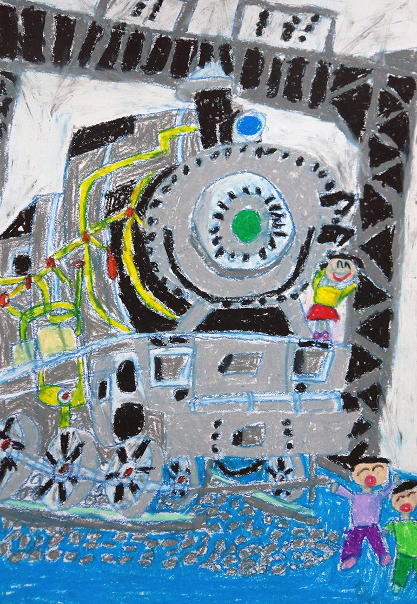
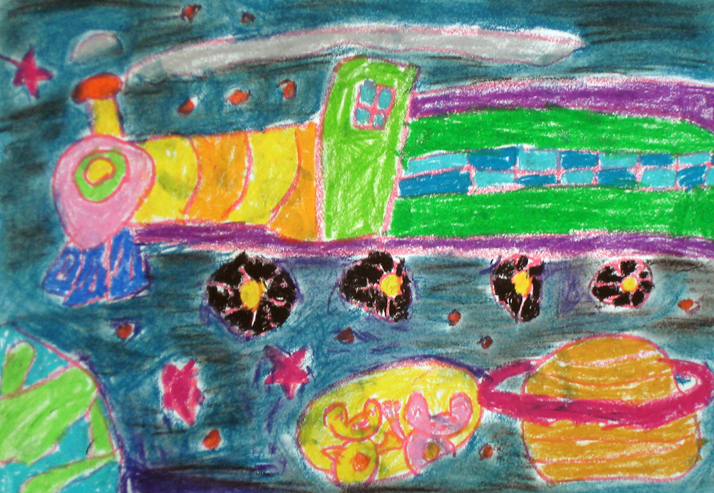
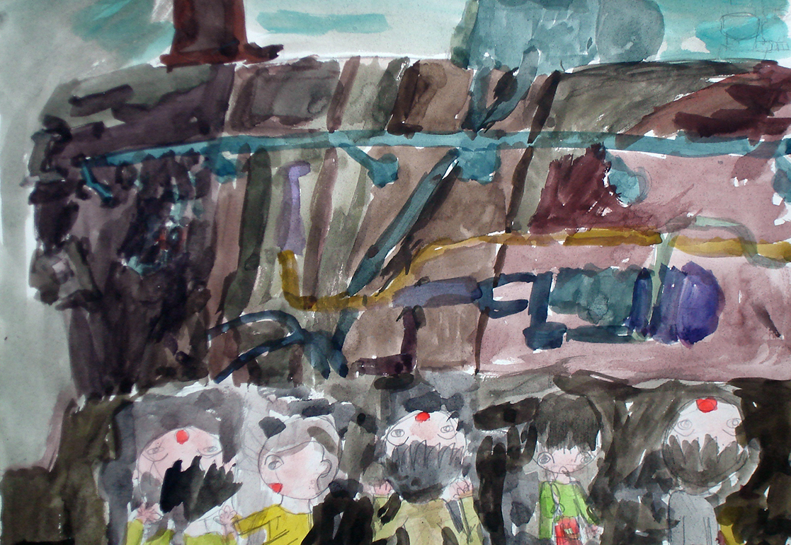
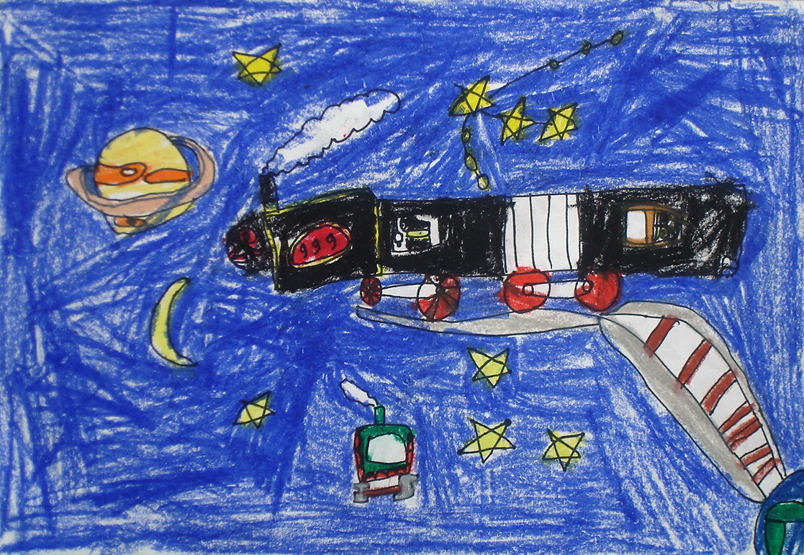
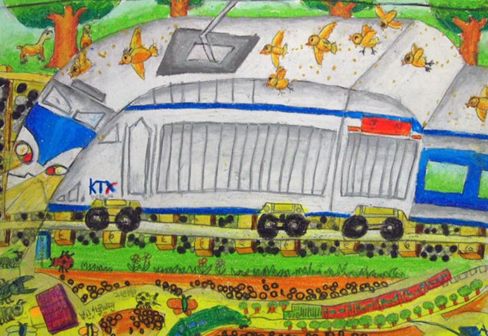

- 무궁화호상
정채연 - 무궁화호상
최주아
- 무궁화호상
위정원 - 무궁화호상
한소정
기차는 우리에게 희망과 꿈을 갖게 합니다.
깊은 우주공간에도 시원한 바닷속으로도 어린이 기차는 달려갑니다. 2001년부터 시작되어 어느덧 20년의 역사가 담긴 한국철도 기차그리기대회에 매년 많은 어린이들이 선물같은 작품들을 보내주었습니다.
가족과 친구를 싣고 산과 들과 바다, 그리고 우주로 나아갔던 상상의 기차는 꿈나무들이 자랐을 때 현실로 마주하기를 바랍니다. 2001년부터 20년간의 대회 면면을 살펴보면 시대의 변화도 읽을 수 있습니다. 대회 초창기에 작품을 출품했던 어린이들은 현재 어엿한 사회인이 되었지만, 참여 어린이들의 열정은 더욱 열기를 더해 갑니다. 특별히 2020년에는 코로나19로 인해 비대면으로 작품접수를 하였고, 많은 어린이들의 관심과 노력으로 뛰어난 작품들이 수상의 영광을 안았습니다. 향후 한국철도가 남북철도와 유라시아 철도까지 이어진다면 또다른 세계의 어린이 그림들을 마주하게 될 것입니다 앞으로도 기차가 우리 어린이들에게 꿈과 희망을 안겨주는 존재로 더욱 확장될 수 있도록 한국철도와 철도박물관은 더욱 정진할 것입니다. 감사합니다. 철도박물관장 정 문 영
깊은 우주공간에도 시원한 바닷속으로도 어린이 기차는 달려갑니다. 2001년부터 시작되어 어느덧 20년의 역사가 담긴 한국철도 기차그리기대회에 매년 많은 어린이들이 선물같은 작품들을 보내주었습니다.
가족과 친구를 싣고 산과 들과 바다, 그리고 우주로 나아갔던 상상의 기차는 꿈나무들이 자랐을 때 현실로 마주하기를 바랍니다. 2001년부터 20년간의 대회 면면을 살펴보면 시대의 변화도 읽을 수 있습니다. 대회 초창기에 작품을 출품했던 어린이들은 현재 어엿한 사회인이 되었지만, 참여 어린이들의 열정은 더욱 열기를 더해 갑니다. 특별히 2020년에는 코로나19로 인해 비대면으로 작품접수를 하였고, 많은 어린이들의 관심과 노력으로 뛰어난 작품들이 수상의 영광을 안았습니다. 향후 한국철도가 남북철도와 유라시아 철도까지 이어진다면 또다른 세계의 어린이 그림들을 마주하게 될 것입니다 앞으로도 기차가 우리 어린이들에게 꿈과 희망을 안겨주는 존재로 더욱 확장될 수 있도록 한국철도와 철도박물관은 더욱 정진할 것입니다. 감사합니다. 철도박물관장 정 문 영
제19회 ‘어린이 기차그리기대회’는 전국에서 많은 어린이들에게 기차의 중요성을 일깨워주는 교육의 장은 물론이고 상상력을 바탕으로 꿈과 희망을 키워주며 창의력 신장과 예술적
소질을 개발하는데 크게 기여하는 어린이 미술축제였습니다.
작품 심사과정은 미술교육 전문심사위원으로 구성하였으며 접수된 작품은 전국에서 출품하였기에 지역적으로 편차를 최소화한 입상을 위하여 예심 1차 심사를 거친후 본선심사 1차,
2차, 3차의 3단계 연령별 심사를 통하여 공정한 평가가 반영되도록 하였으며, 아동들의 다양한 재능과 능력이 고르게 평가될 수 있도록 아동의 발달단계를 최우선으로 고려하면서
심사하였습니다.
주제의 관련성 및 이해도, 독창성, 심미성의 평가를 고르게 반영하여 공정하게 심사했습니다. 자신의 생각을 화면 전체에 무리없이 대담하게 표현한 작품에 우선을 두었으며, 기교나
세련되지 않았어도 잠재된 상상력이 뛰어난 창의적인 작품과 자기의 생각을 충실히 설명한 작품 또한 많은 점수를 주었습니다.
간혹 전문가들이 보면 한눈에 금방 알 수 있음에도 상에 대한 지나친 욕심 때문에 모작이나 작품의 일부분에 학부모나 교사들의 가필 흔적이 있는 작품을 심사하면서 안타까웠으며 이런
작품들은 높은 점수를 받지 못했음을 말씀드립니다.
어른들의 지나친 간섭은 오히려 어린이들의 창의력 신장에 역행하고 있음을 꼭 말씀드리고 싶습니다.
끝으로 이번 대회를 통하여 어린이들의 순수함과 상상력이 뛰어난 작품을 보면서 친밀하고 많은 감동과 공감을 느낄 수 있었습니다.
내년 대회에는 더욱 발전되고 빛나는 대회로서 훌륭한 작품을 기대해보면서, 대회진행을 위해 헌신의 노력을 다하신 철도박물관장님과 실무관계자 모든 여러분들의 노고에 진심으로
감사드리며, 수상하신 어린이들에게 축하의 박수를 보냅니다.
2020년 10월 23일
심사위원장
수원대학교 미술대학원 조형예술학과
교수 이 승 춘
수원대학교 미술대학원 조형예술학과
교수 이 승 춘
 2006년 대상 수상작이민지 ⁄
유치부
2006년 대상 수상작이민지 ⁄
유치부- 2006년 대상 수상작신인선 ⁄ 초등부
 2007년 대상 수상작주희진 ⁄
유치부
2007년 대상 수상작주희진 ⁄
유치부
- 2007년 대상 수상작목진우 ⁄ 초등부
- 2008년 대상 수상작정효준 ⁄ 유치부
 2008년 대상 수상작이서연 ⁄
유치부
2008년 대상 수상작이서연 ⁄
유치부
- 2008년 대상 수상작이동아 ⁄ 초등부
 2009년 대상 수상작서여진 ⁄
유치부
2009년 대상 수상작서여진 ⁄
유치부 2009년 대상 수상작신영환 ⁄
유치부
2009년 대상 수상작신영환 ⁄
유치부
 2009년 대상 수상작이초연 ⁄
초등부
2009년 대상 수상작이초연 ⁄
초등부 2010년 대상 수상작이성빈 ⁄
유치부
2010년 대상 수상작이성빈 ⁄
유치부- 2010년 대상 수상작김민교 ⁄ 유치부
 2010년 대상 수상작송현수 ⁄
초등부
2010년 대상 수상작송현수 ⁄
초등부
- 2015년 대상 수상작강지훈 ⁄ 유치부
- 2015년 대상 수상작남승헌 ⁄ 초등부
- 2019년 대상 수상작안나경 ⁄ 유치부
- 2019년 대상 수상작정문규 ⁄ 초등부